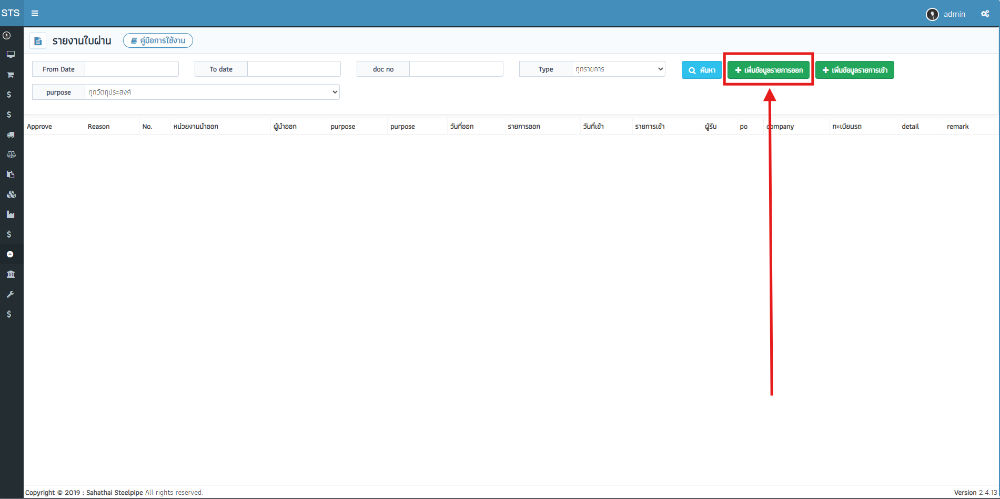
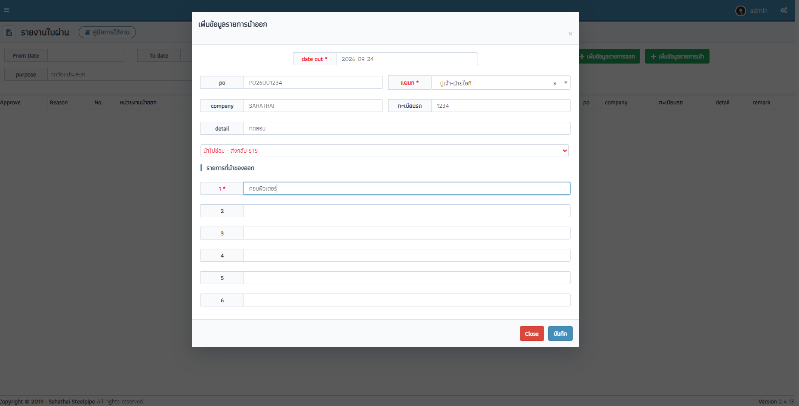
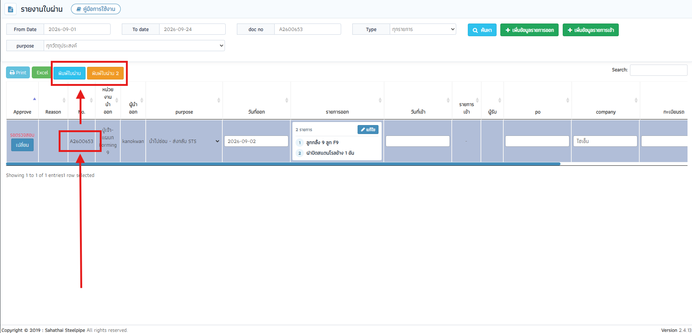
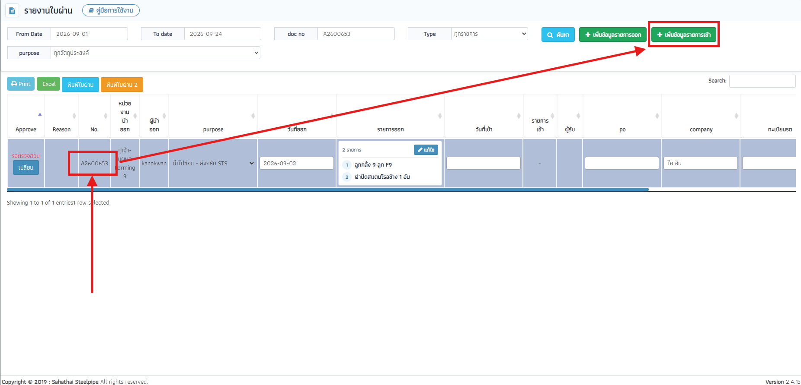
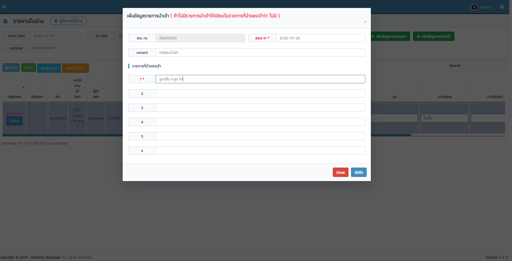
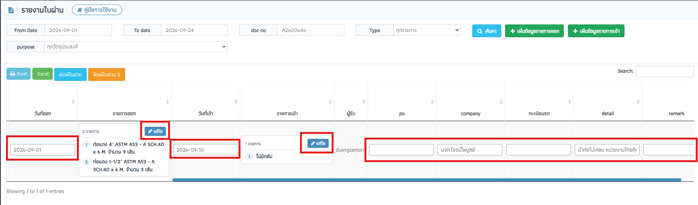
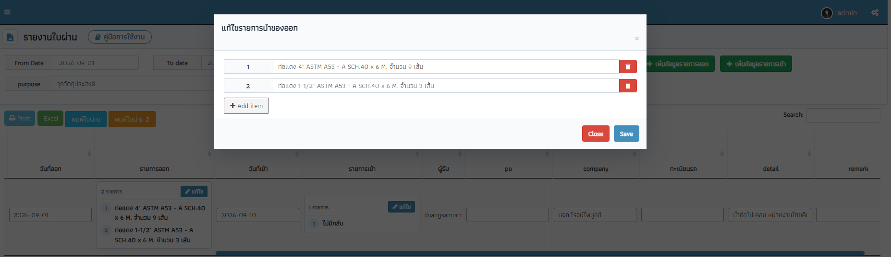
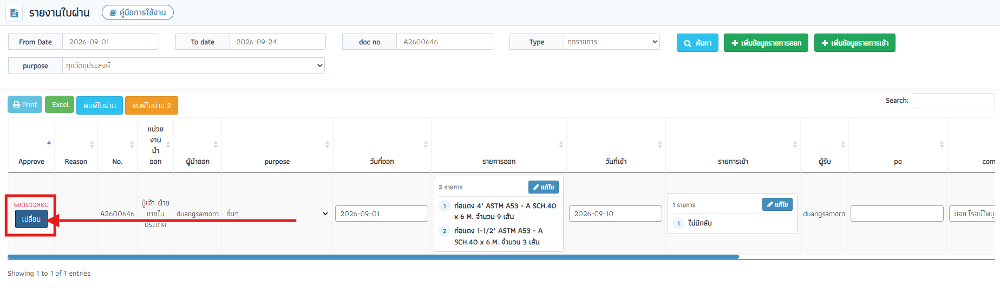
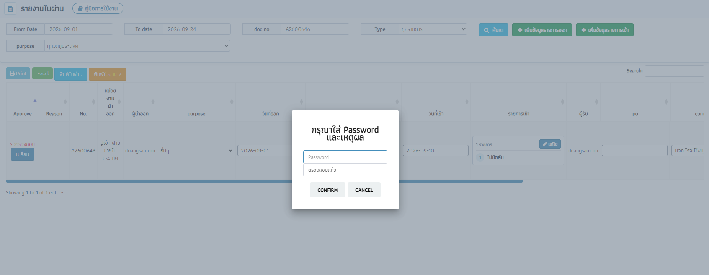

คู่มือการใช้งาน: ระบบรายงานใบผ่าน
คู่มือขั้นตอนการขออนุญาตนำสิ่งของ ออก-เข้า นอกบริเวณโรงงาน, การบันทึกข้อมูล, การอนุมัติ และการพิมพ์ใบผ่าน
บ.สหไทยสตีลไพพ์ จำกัด (มหาชน)
สารบัญหัวข้อด่วน (คลิกเพื่อกระโดดไปยังหัวข้อ):
ระบบรายงานใบผ่าน ใช้สำหรับบันทึกและควบคุมการนำทรัพย์สิน วัสดุ อุปกรณ์ ชิ้นงาน หรือเศษเหล็ก
ออกนอกบริเวณโรงงาน บ.สหไทยสตีลไพพ์ จำกัด (มหาชน) เพื่อให้สามารถติดตามสถานะการนำของกลับเข้าโรงงาน
และมีหลักฐานการตรวจสอบและอนุมัติอย่างถูกต้องตามมาตรฐานความปลอดภัย
1
1. บันทึกนำออก
สร้างเอกสาร + ใส่รายการออก (1-6)
2
2. พิมพ์ใบผ่าน
ผจก. เซ็น & รปภ./สโตร์ ตรวจ
3
3. บันทึกนำเข้า
ของกลับเข้า / ระบุ "ไม่มี"
4
4. ตรวจสอบ/อนุมัติ
ยืนยันรหัสผ่านเพื่อล็อคเอกสาร
กรณีที่ 1: สิ่งของมีกำหนดส่งกลับโรงงาน
ตัวอย่าง: นำไปซ่อม,
นำเหล็กออกแปรรูป, นำสินค้าไปเปลี่ยน, ส่งงานตัวอย่าง
- เปิดใบผ่านออก โดยกดปุ่ม
+ เพิ่มข้อมูลรายการออก
- พิมพ์ใบผ่าน ให้ผู้จัดการฝ่ายเซ็นอนุมัติ และ รปภ. ตรวจสอบตอนนำออก
- เมื่อผู้รับเหมาหรือร้านค้าส่งของกลับมา ให้เลือกเอกสารแล้วกดปุ่ม
+ เพิ่มข้อมูลรายการเข้า
ระบุวันที่และรายการที่ได้รับคืน
- ผู้มีอำนาจตรวจสอบกดปุ่ม
เปลี่ยน เพื่อใส่รหัสผ่านอนุมัติปิดเอกสาร
กรณีที่ 2: สิ่งของไม่มีการส่งกลับโรงงาน
ตัวอย่าง: ขายของเก่า
(เศษเหล็ก), กำจัดทิ้ง, นำออกวัสดุสิ้นเปลือง, ท่อตัวอย่าง
- เปิดใบผ่านออกตามปกติ โดยเลือกวัตถุประสงค์ เช่น
ขายของเก่า หรือ กำจัดทิ้ง
- พิมพ์ใบผ่านและนำสิ่งของออกนอกโรงงาน
- ขั้นตอนสำคัญ: ให้เลือกเอกสารแล้วกดปุ่ม
+ เพิ่มข้อมูลรายการเข้า
โดยในช่องรายการที่ 1 ให้ระบุว่า "ไม่มี"
- กดปุ่ม
เปลี่ยน เพื่ออนุมัติเอกสารเป็นสถานะ "ตรวจสอบแล้ว"
-
กดปุ่ม
เพิ่มข้อมูลรายการออก ในแถบเครื่องมือด้านบนของหน้ารายงาน
คลิกเพื่อดูภาพขนาดใหญ่

ภาพที่ 1.1:
ตำแหน่งปุ่ม + เพิ่มข้อมูลรายการออก บนแถบเครื่องมือด้านบน
ดูภาพใหญ่
-
หน้าต่าง Popup จะแสดงขึ้นมา ให้กรอกรายละเอียดให้ครบถ้วน:
คลิกเพื่อดูภาพขนาดใหญ่

ภาพที่ 1.2:
หน้าต่างแบบฟอร์ม เพิ่มข้อมูลรายการนำออก กรอกข้อมูลวันที่, แผนก, วัตถุประสงค์
และรายการสิ่งของ 1 - 6
ดูภาพใหญ่
| ช่องข้อมูล |
ความจำเป็น |
คำอธิบาย & ข้อกำหนด |
| date out (วันที่ออก) |
จำเป็น * |
คลิกเลือกวันที่ที่นำของออกจากปฏิทิน (ห้ามเว้นว่างเด็ดขาด) |
| แผนก |
จำเป็น * |
เลือกแผนกเจ้าของสิ่งของที่ขอนำออก |
| วัตถุประสงค์ (Purpose) |
จำเป็น * |
เลือกให้ตรงกับลักษณะงาน เช่น นำไปซ่อม, ขายของเก่า, กำจัดทิ้ง, ส่งทดสอบ |
| PO / Company / ทะเบียนรถ |
ควรระบุ |
เลขที่ PO (ถ้ามี), ชื่อบริษัทผู้รับเหมาหรือร้านค้า, เลขทะเบียนรถที่ใช้ขนส่ง |
| Detail |
เพิ่มเติม |
รายละเอียดงาน สถานที่จัดส่ง หรือข้อความกำกับอื่นๆ |
| รายการที่ 1 - 6 |
อย่างน้อย 1 รายการ * |
ระบุชื่อสิ่งของ จำนวน และหน่วยนับให้ชัดเจน (สามารถระบุได้สูงสุด 6 รายการ) |
-
กดปุ่ม "บันทึก" ระบบจะแจ้งเตือนเลขที่เอกสารใหม่ เช่น
บันทึกสำเร็จ : A2600123
และรายการจะแสดงในตารางทันที
รูปแบบเลขที่เอกสาร: เอกสารใบผ่านจะขึ้นต้นด้วยตัวอักษร
A ตามด้วยเลขปี ค.ศ. 2 หลัก และลำดับ 5 หลัก เช่น A2600001
เมื่อสร้างเอกสารนำออกเรียบร้อยแล้ว ก่อนที่จะนำสิ่งของออกนอกโรงงาน ผู้ขออนุญาตจะต้องสั่งพิมพ์เอกสารใบผ่าน
เพื่อนำไปให้ผู้จัดการฝ่ายเซ็นอนุมัติ และนำเอกสารฉบับจริงไปแสดงต่อเจ้าหน้าที่ รปภ. ที่ป้อมยามหน้าประตูโรงงาน:
-
คลิกเลือกแถวเอกสารในตาราง: ให้คลิกที่แถวของเลขที่เอกสารที่ต้องการพิมพ์
(สังเกตแถวที่เลือกจะไฮไลต์เป็นแถบสีฟ้าเข้ม)
-
กดปุ่มสั่งพิมพ์ที่ต้องการ: ในแถบเครื่องมือเหนือตารางด้านซ้าย จะมีปุ่มพิมพ์ 2 แบบ:
-
พิมพ์ใบผ่าน
(ปุ่มสีฟ้า):
แบบฟอร์มมาตรฐานสำหรับนำของออกนอกโรงงานทั่วไป มีช่องลงนาม 4 ส่วน ได้แก่:
ผู้ขออนุญาต • ผู้จัดการฝ่าย • ฝ่ายบุคคล / รปภ. ตรวจสอบ • แผนกสโตร์
-
พิมพ์ใบผ่าน 2
(ปุ่มสีส้ม):
แบบฟอร์มสำหรับกรณีส่งของให้ลูกค้าหรือบริษัทภายนอก ซึ่งจะเพิ่มช่องลงนาม "ผู้รับคืนสินค้า (ลูกค้า)"
สำหรับให้ปลายทางเซ็นรับของ
คลิกเพื่อดูภาพขนาดใหญ่

ภาพที่ 2.1:
คลิกเลือกแถวเอกสารในตาราง (ไฮไลต์สีฟ้า) แล้วคลิกปุ่ม พิมพ์ใบผ่าน หรือ
พิมพ์ใบผ่าน 2 บนแถบเครื่องมือ
ดูภาพใหญ่
การเปิดไฟล์และพิมพ์: เมื่อกดปุ่ม
ระบบจะเปิดหน้าต่างเอกสารแบบฟอร์มขนาด A4 ในแท็บใหม่ทันที สามารถตรวจสอบความถูกต้องและกดปุ่มพิมพ์ (Print)
ออกทางเครื่องพิมพ์ได้เลย
-
ในตารางรายงาน ให้คลิกที่แถวของเลขที่เอกสารที่ต้องการทำรายการ (แถวที่เลือกจะไฮไลต์เป็นสีฟ้า)
* สามารถระบุเลขที่เอกสารในช่อง doc no หรือเลือก Type เป็น "รายการเข้า
ที่ยังไม่ได้นำเข้า" แล้วกดค้นหา
-
กดปุ่ม
เพิ่มข้อมูลรายการเข้า ด้านบน
คลิกเพื่อดูภาพขนาดใหญ่

ภาพที่ 3.1:
คลิกเลือกแถวเอกสารในตาราง แล้วกดปุ่ม + เพิ่มข้อมูลรายการเข้า ด้านบน
ดูภาพใหญ่
-
หน้าต่าง Popup จะแสดงเลขที่เอกสาร (doc no) ให้อัตโนมัติ:
คลิกเพื่อดูภาพขนาดใหญ่

ภาพที่ 3.2:
หน้าต่างแบบฟอร์ม เพิ่มข้อมูลรายการนำเข้า (ระบุวันที่, หมายเหตุ และรายการสิ่งของที่นำเข้า
1-6)
ดูภาพใหญ่
- date in (วันที่เข้า): คลิกเลือกวันที่ที่สิ่งของถูกส่งกลับมาถึงโรงงาน
- remark: ระบุหมายเหตุเพิ่มเติม (ถ้ามี)
- รายการที่นำของเข้า (1 - 6): ระบุรายการสิ่งของที่ตรวจรับคืนจริง
-
กดปุ่ม "บันทึก" เพื่อยืนยันการนำเข้า
คำแนะนำกรณี "ไม่มีของนำกลับเข้า" (เช่น ขายของเก่า, กำจัดทิ้ง,
ท่อตัวอย่าง):
สามารถบันทึกรายการนำเข้าเพื่อปลดล็อคขั้นตอนการตรวจสอบ (Approve) ได้ดังนี้:
- ในช่อง date in: ระบุวันที่ทำรายการ
- ในช่อง รายการที่ 1: ให้ระบุคำว่า
ไม่มี หรือ ไม่มีครับ
สำหรับเอกสารที่ยังไม่ได้รับการอนุมัติ (ยังไม่ได้ Approve)
ผู้ใช้สามารถแก้ไขข้อมูลบางฟิลด์ได้ทันทีจากในตาราง โดยไม่ต้องเปิดหน้าต่างใหม่:
คลิกเพื่อดูภาพขนาดใหญ่

ภาพที่ 4.1:
ฟิลด์ที่แก้ไขได้ในตาราง ได้แก่ วันที่ออก/เข้า, ปุ่มแก้ไขรายการออก/เข้า และช่องข้อความ PO, Company,
ทะเบียนรถ, Detail, Remark
ดูภาพใหญ่
-
ช่องข้อความ (PO, Company, ทะเบียนรถ, Detail, Remark): คลิกที่ช่องข้อความในตาราง แก้ไขค่า
แล้วคลิกออกนอกช่อง (Blur) ระบบจะบันทึกทันที
-
ช่องวัตถุประสงค์ (Purpose): สามารถคลิกเลือกเปลี่ยน Dropdown ได้ทันทีจากในตาราง
-
ช่องรายการออก / รายการเข้า: คลิกปุ่ม แก้ไข ในตาราง เพื่อเปิดหน้าต่างเพิ่มรายการ (Add item)
หรือลบรายการ (ปุ่มถังขยะ)
คลิกเพื่อดูภาพขนาดใหญ่

ภาพที่ 4.2:
หน้าต่างแบบฟอร์ม แก้ไขรายการนำของออก สามารถเพิ่มรายการใหม่ (+ Add item)
หรือกดไอคอนถังขยะสีแดงเพื่อลบรายการ
ดูภาพใหญ่
หมายเหตุการล็อคข้อมูล: เมื่อเอกสารเปลี่ยนสถานะเป็น
"ตรวจสอบแล้ว" (Approve = 1) ฟิลด์และปุ่มแก้ไขทั้งหมดในแถวนั้นจะถูกล็อคให้อ่านอย่างเดียว
ไม่สามารถแก้ไขได้อีก เพื่อป้องกันการเปลี่ยนแปลงข้อมูลย้อนหลัง
ยืนยันความถูกต้องและปิดรายการเอกสาร:
-
มองหาแถวเอกสารที่ต้องการ แล้วกดปุ่ม "เปลี่ยน" ในคอลัมน์ Approve (สถานะตั้งต้นคือ
รอตรวจสอบ)
คลิกเพื่อดูภาพขนาดใหญ่

ภาพที่ 5.1:
ตำแหน่งปุ่ม เปลี่ยน ในคอลัมน์ Approve สำหรับเริ่มขั้นตอนอนุมัติเอกสาร
ดูภาพใหญ่
-
หน้าต่างยืนยันจะเปิดขึ้นมา ให้กรอกข้อมูลการอนุมัติ:
- Password: รหัสผ่านยืนยันการอนุมัติของผู้มีอำนาจ
- Reason: ระบุเหตุผลการตรวจสอบ เช่น "ตรวจสอบแล้ว" หรือ "ของกลับครบถ้วน"
(อย่างน้อย 3 ตัวอักษร)
คลิกเพื่อดูภาพขนาดใหญ่

ภาพที่ 5.2:
หน้าต่าง Popup กรุณาใส่ Password และเหตุผล ใส่รหัสผ่านและเหตุผลแล้วกดปุ่ม
CONFIRM
ดูภาพใหญ่
- กด Confirm ระบบจะบันทึกและเปลี่ยนสถานะเป็น ตรวจสอบแล้ว พร้อมทั้งล็อคเอกสารไม่ให้แก้ไข
เงื่อนไขก่อนการอนุมัติ: เอกสารจะต้องมีการบันทึกรายการนำเข้าแล้ว
(หรือระบุ "ไม่มี" ในกรณีไม่มีของกลับ) จึงจะสามารถกดอนุมัติได้
ขายของเก่า หรือ ของกำจัดทิ้ง ไม่มีของส่งกลับ ทำไมกดปุ่มเปลี่ยนสถานะ Approve ไม่ได้?
คำตอบ: ระบบกำหนดว่าเอกสารต้องมีข้อมูลรายการนำเข้าก่อน จึงจะอนุมัติได้
เพื่อยืนยันว่าไม่มีของค้างคา ให้คลิกเลือกเอกสาร แล้วกดปุ่ม + เพิ่มข้อมูลรายการเข้า
จากนั้นในช่องรายการที่ 1 ให้พิมพ์คำว่า "ไม่มี" แล้วกดบันทึก จากนั้นจะสามารถกดเปลี่ยนสถานะ
Approve ได้ทันที
จะดูเฉพาะเอกสารที่ของยังไม่นำกลับเข้าโรงงานได้อย่างไร?
คำตอบ: ในแถบค้นหาด้านบน ช่อง Type ให้เลือกเป็น "รายการเข้า
ที่ยังไม่ได้นำเข้า" แล้วกดปุ่ม "ค้นหา" ระบบจะดึงเฉพาะรายการที่ยังค้างอยู่มาให้